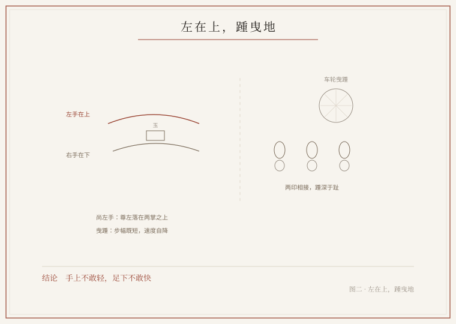

曲礼下 · 二·四 · 第 127 课
一手之序，一步之节。执君器与币玉时，左手在上；行走时不起脚跟，拖踵如车轮。
说什么事：执主器，操币、圭璧，则尚左手。行不举足，车轮曳踵。
落在哪一层：仪。手上一个上下，足下一个起落，都是极小处。
为何编在此位：上节讲用力，此节讲用手之序与用足之节。手之后是足，正是「持物」的全部身体条件。
【经】執主器，操幣、圭璧，則尚左手。行不舉足，車輪曳踵。
【注】重慎也。尚左手，尊左也。車輪，謂行不絕也。
【疏】……圭璧，瑞玉也。尚，上也。谓执持君器及币玉也。若擎奉此物，则右手在下，左手在上。左尊，故云「尚左手」。「行不举足，车轮曳踵」者，曳，拽也。踵，脚后也。若执器行时，则不得举足，但起前拽后，使踵如车轮曳地而行，故云「车轮曳踵」。
操 《释文》「七刀反」。持也。与「执」微别：执为持之定，操为持之动。
币 束帛之类，行礼所用。
圭璧 瑞玉。圭为命圭，璧为谷璧、蒲璧之属。
尚左手 疏「右手在下，左手在上。左尊」。尚者，上也。
行不举足 不是不走路，是不抬脚跟。疏「不得举足」。
车轮曳踵 曳，拽也；踵，脚后。使脚跟擦地而行，如车轮之连绵不绝。
捧持君主的器物，或持币帛圭璧，要以左手为上、右手在下。行走时脚不抬起，脚跟擦地，像车轮滚过一样连着走。
一件事里有两个向度：左右（空间之序）与迟速（时间之节）。左手在上，是让尊者得尊位；曳踵而行，是让持器者不得不慢。礼不靠禁令使人慢，靠身体条件使人慢。
第一层 左尊的空间化 「左尊」是一句抽象判断，此处落在两只手的前后上下。抽象之义，必有可指之形，否则无从遵守。
第二层 曳踵即限速 脚跟不离地，步幅自然缩短，速度自然降下来。手上捧着东西的人，本来也快不了；礼只是把这个物理事实写成了规矩。
第三层 与「如不克」相续 上节收力，此节收步。两节合起来是一个完整的人：手不敢轻，脚不敢快。
第四层 连绵之意 注「车轮，谓行不绝也」。不绝者，不断。礼要的是连贯的稳，不是一顿一顿的慎。
与今日何干 端着一盘热汤走路，人自然就慢下来了。今天不必人教，身体自己知道；古人的贡献，是把它记成一条可传的话。
| 左 | 右 |
|---|---|
| 执主器，操币圭璧 | 皆君物与瑞玉 |
| 尚左手 | 右手在下，左尊 |
| 行不举足 | 不抬脚跟 |
| 车轮曳踵 | 起前拽后，如轮曳地 |
| 重慎 | 手不轻，脚不快 |
| 行不绝 | 要连贯的稳，非一顿一顿 |
画两只手相叠之状：左手在上、覆住右手，掌中虚握一片薄玉；手的下方画一对并行的脚印，两印之间距离极短、前后相接，脚跟处的印痕比脚尖深。脚印旁画一道极淡的圆弧，弧上一道短辐，示意车轮。不画人、不写文字。赭色只用在上面那只左手的手背上。
